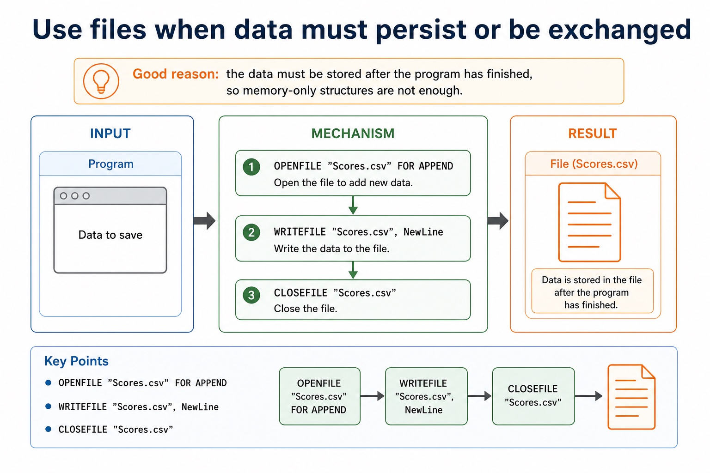
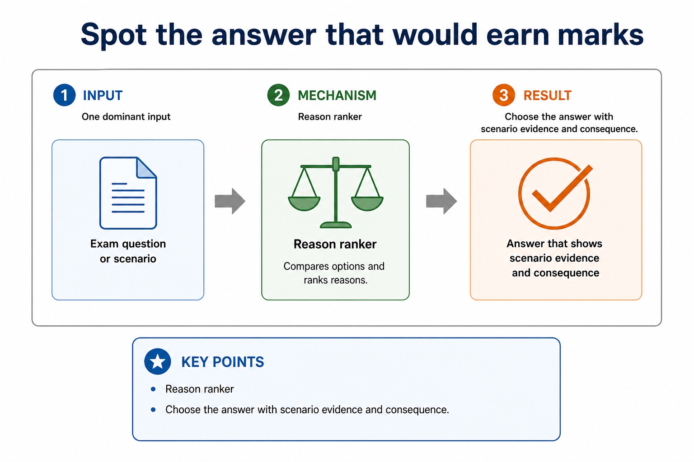

The best data structure is the one whose access pattern matches the problem.
Paper 2 rarely rewards “because it is easier” on its own. A strong answer chooses a structure and explains
the reason: same-type repeated values, mixed fields about one entity, persistent storage, LIFO removal,
FIFO service order, or a need to process many records.
Choosearray, record, file, stack or queue for a scenario
Justifylink structure features to scenario requirements
Avoidvague answers that do not earn Cambridge-style marks
Scenario cluemany same-type values -> arrayone entity, mixed fields -> recordsurvives program end -> fileLIFO/FIFO rule -> stack/queue
Structure + reason + consequence = marks
The structure is not a vibe. It is a design choice with evidence.
Why this matters
Exam questions often ask for a suitable data structure and a reason. The reason usually carries the marks.
Common trap
“It is efficient” is not enough unless the answer explains why the structure matches the operation needed.
Warm-up hook
Would you store a class register as 28 separate variables?
Choose the best structure for 28 students, each with name, mark and attendance status.
Choose the structure that stores many students while preserving fields for each student.
Selection criteria
Start with the data and operations, not the keyword
Chinese support: criteria 是“选择标准”；access pattern 是“访问方式”；justification 是“理由说明”。
Question to ask
Why it matters
Likely structure
Are there many values of the same type?
indexed traversal/search
Array
Does one item have several named fields?
mixed types and meaningful field names
Record
Are there many entities with the same fields?
repeat a record shape
Array of records
Must the data survive after the program ends?
persistent storage
Text file / CSV file
Is removal order LIFO or FIFO?
restricted access rule
Stack / Queue
Start with the data and operations, not the keyword
Start with the data and operations, not the keyword: source-grounded visual explanation.
Lesson fact: Selection criteria
Lesson fact: Question to ask
Lesson fact: Why it matters
Lesson fact: Likely structure
Lesson fact: Are there many values of the same type?
Lesson fact: indexed traversal/search
Lesson fact: Does one item have several named fields?
Lesson fact: mixed types and meaningful field names
Lesson fact: Are there many entities with the same fields?
Lesson fact: repeat a record shape
Lesson fact: Array of records
Lesson fact: Must the data survive after the program ends?
Array
Use arrays for many similar values accessed by index
DECLARE Scores : ARRAY[1:30] OF INTEGER
FOR Index <- 1 TO 30
Total <- Total + Scores[Index]
NEXT Index
Good reason: all elements are INTEGER scores and can be traversed using an index.
Use arrays for many similar values accessed by index
Use arrays for many similar values accessed by index: source-grounded visual explanation.
Lesson fact: DECLARE Scores : ARRAY[1:30] OF INTEGER
Lesson fact: FOR Index <- 1 TO 30
Lesson fact: Total <- Total + Scores[Index]
Lesson fact: NEXT Index
Lesson fact: Good reason: all elements are INTEGER scores and can be traversed using an index.
Record / array of records
Use records when named fields belong to one entity
One student
TYPE TStudent
DECLARE Name : STRING
DECLARE Mark : INTEGER
DECLARE Present : BOOLEAN
ENDTYPE
Many students
DECLARE Students : ARRAY[1:28] OF TStudent
OUTPUT Students[1].Name
Use records when named fields belong to one entity
Use records when named fields belong to one entity: source-grounded visual explanation.
Lesson fact: Record / array of records
Lesson fact: One student
Lesson fact: TYPE TStudent
Lesson fact: DECLARE Name : STRING
Lesson fact: DECLARE Mark : INTEGER
Lesson fact: DECLARE Present : BOOLEAN
Lesson fact: Many students
Lesson fact: DECLARE Students : ARRAY[1:28] OF TStudent
Lesson fact: OUTPUT Students[1].Name
File
Use files when data must persist or be exchanged
OPENFILE "Scores.csv" FOR APPEND
WRITEFILE "Scores.csv", NewLine
CLOSEFILE "Scores.csv"
Good reason: the data must be stored after the program has finished, so memory-only structures are not enough.
Use files when data must persist or be exchanged

Use files when data must persist or be exchanged: source-grounded visual explanation.
Lesson fact: OPENFILE "Scores.csv" FOR APPEND
Lesson fact: WRITEFILE "Scores.csv", NewLine
Lesson fact: CLOSEFILE "Scores.csv"
Lesson fact: Good reason: the data must be stored after the program has finished, so memory-only structures are not enough.
Stack and queue
Use ADTs when the removal rule matters
Scenario clue
Structure
Reason
undo last action
Stack
most recent action is reversed first
print jobs in arrival order
Queue
first job submitted should print first
customer service line
Queue
fair FIFO order
Use ADTs when the removal rule matters
Use ADTs when the removal rule matters: source-grounded visual explanation.
Lesson fact: Stack and queue
Lesson fact: Scenario clue
Lesson fact: Structure
Lesson fact: undo last action
Lesson fact: most recent action is reversed first
Lesson fact: print jobs in arrival order
Lesson fact: first job submitted should print first
Lesson fact: customer service line
Lesson fact: fair FIFO order
Decision table
Match scenario evidence to structure features
Need
Choose
Do not choose just because...
calculate average of 50 readings
array of REAL
records sound more advanced
store one book's ISBN, title and pages
record
ISBN has digits
store 200 books with same fields
array of records
one record is not enough
save transactions for next run
text/CSV file
array works during one run
serve requests in arrival order
queue
stack is also an ADT
Match scenario evidence to structure features
Match scenario evidence to structure features: source-grounded visual explanation.
Lesson fact: Decision table
Lesson fact: Do not choose just because...
Lesson fact: calculate average of 50 readings
Lesson fact: array of REAL
Lesson fact: records sound more advanced
Lesson fact: store one book's ISBN, title and pages
Lesson fact: ISBN has digits
Lesson fact: store 200 books with same fields
Lesson fact: array of records
Lesson fact: one record is not enough
Lesson fact: save transactions for next run
Lesson fact: text/CSV file
Pseudocode vs Java
Cambridge answers should justify the structure, not advertise a Java class
Cambridge-style modelling
TYPE TBook
DECLARE ISBN : STRING
DECLARE Title : STRING
DECLARE Pages : INTEGER
ENDTYPE
DECLARE Books : ARRAY[1:200] OF TBook
Java support only
class Book {
String isbn;
String title;
int pages;
}
Book[] books = new Book[200];
Paper 2 may accept many clear pseudocode styles, but the explanation must still match the scenario.
Cambridge answers should justify the structure, not advertise a Java class
Cambridge answers should justify the structure, not advertise a Java class: source-grounded visual explanation.
Lesson fact: Pseudocode vs Java
Lesson fact: Cambridge-style modelling
Lesson fact: TYPE TBook
Lesson fact: DECLARE ISBN : STRING
Lesson fact: DECLARE Title : STRING
Lesson fact: DECLARE Pages : INTEGER
Lesson fact: DECLARE Books : ARRAY[1:200] OF TBook
Lesson fact: Java support only
Lesson fact: class Book {
Lesson fact: String isbn;
Lesson fact: String title;
Lesson fact: int pages;
Interactive chooser
Select the best structure for a scenario
Choose a scenario and a structure.
Reason ranker
Spot the answer that would earn marks
Choose the answer with scenario evidence and consequence.
Spot the answer that would earn marks

Spot the answer that would earn marks: source-grounded visual explanation.
Lesson fact: Reason ranker
Lesson fact: Choose the answer with scenario evidence and consequence.
Worked examples
Selection answers that explain the choice
Practice
Ten quick data-structure choices
Type a concise answer, then check. Each question also has its own answer button.
Mistake debugging
Fix weak structure choices
Exam-style questions
Original Cambridge-style questions with expandable MS
These questions focus on structure choice, precise reasons and rejecting unsuitable alternatives.
Extra practice
Choosing stack, queue or linked list
A stack is LIFO with push/pop at the top; a queue is FIFO with enqueue at the rear and dequeue at the front; a linked list supports traversal and insertion/deletion through links.
Justification must name the required access order or update behaviour. Array implementations have fixed capacity unless resized and require overflow/underflow checks; linked structures require pointer management.
Worked example: Choose structures
Undo history uses a stack because the most recent action is undone first. Print jobs use a queue because the earliest accepted job prints first. A changing ordered playlist can use a linked list for link-based insertion/deletion.
Targeted practice
1. Choose an ADT for breadth-first waiting jobs.
Show answer
Queue, because first in is first out.
2. Choose an ADT for nested function return addresses.
Show answer
Stack, because the most recent call returns first.
3. What must be checked before pushing to a full array stack?
Show answer
Overflow/capacity.
Exam-style question
4 marks
Justify a suitable ADT for browser Back history and contrast it with a queue.
Show MS
B1 selects stack
B1 most recently visited page is returned to first / LIFO
B1 queue removes earliest item first / FIFO
B1 explains why FIFO gives the wrong access order
Summary
Choice checklist
Datasame type, mixed fields, or persistent text?
Operationtraverse, search, append, undo or serve?
Reasonstate why the feature fits the scenario.
Homework
Choose, justify, reject
Task 1: Three choicesFor a library system, choose structures for one book, 1000 books, and saved borrowing history. Give one precise reason for each.
Task 2: Reject a weak answerImprove this answer: “Use a queue because it is efficient.” The scenario is print jobs processed in arrival order.
Task 3: Exam paragraphWrite a 6-mark comparison of using an array of records versus three separate arrays for student records.